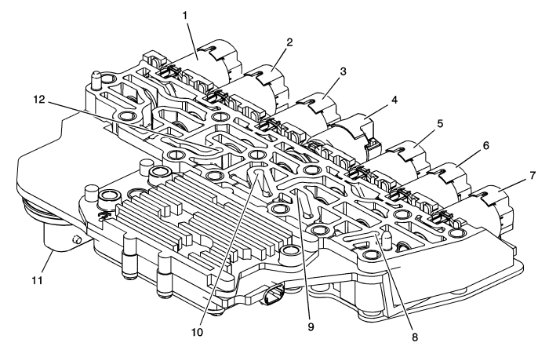

Descripción de los componentes electrónicos
Conjunto de la válvula solenoide de control (con carrocería y TCM)

|
|---|
| (1) | Solenoide de control de presión 3 (R1/456) |
| (2) | Solenoide de control de presión 2 (35R) |
| (3) | Solenoide de control de presión del embrague del convertidor de par (TCC) |
| (4) | Solenoide de cambio 1 (Act./Desac.) |
| (5) | Solenoide de control de presión 5 (1234) |
| (6) | Solenoide de control de presión 4 (26) |
| (7) | Solenoide de control de presión de la tubería |
| (8) | Interruptor 3 (26) de presión del líquido de la caja de cambios (TFP) |
| (9) | Interruptor 2 (35R) de presión del líquido de la caja de cambios (TFP) |
| (10) | Interruptor 1 (1234) de presión del líquido de la caja de cambios (TFP) |
| (11) | Conector de paso |
| (12) | Interruptor 4 (456/R1) de presión del líquido de la caja de cambios (TFP) |
El conjunto de válvulas solenoides de control (con cuerpo y TCM) incluye los siguientes componentes:
| • | Módulo de control del cambio (TCM) |
| • | Solenoides de control de presión del embrague (Clutch PC Sol) |
| • | Solenoides de cambio (SS) |
| • | Solenoide de control de presión de línea (Line PC Sol) |
| • | Solenoide de control de presión de embrague del convertidor de par (TCC PC Sol) |
| • | Sensor de temperatura del aceite del cambio (TFT Sensor) |
| • | Sensor de temperatura TCM |
| • | Sensor de temperatura de arranque |
| • | Interruptores de presión del aceite del cambio (TFP Sw) |
Estos componentes no se pueden reparar por separado. El conjunto de válvulas solenoides de control (con cuerpo y TCM) utiliza un sistema de bastidor de conductores para conectar estos componentes eléctricamente al TCM. No se utilizan cables para estos componentes. El conjunto de válvulas solenoides de control (con cuerpo y TCM) se atornilla directamente a los conjuntos de cuerpo de válvula superior e inferior en el interior de la transmisión. El conjunto de válvulas solenoides de control (con cuerpo y TCM) se conecta al conector de 14 vías del mazo de cables del motor.
Palanca de bloqueo del cambio manual con conjunto de interruptor de posición del eje
El conjunto de interruptor de posición del eje del cambio es un interruptor de contacto deslizante conectado al conjunto de la palanca de bloqueo del eje manual dentro de la caja de la transmisión. Las cinco entradas al TCM desde el conjunto del interruptor del eje de cambio manual de la transmisión indican la posición de la palanca selectora de marchas de la transmisión. Esta información se utiliza tanto para los mandos del motor como para determinar los patrones de cambio de la transmisión. El estado de cada entrada está disponible para su visualización en la herramienta de diagnóstico. Los cinco parámetros de entrada representados son la Señal A, Señal B, Señal C, Señal P (paridad) y la Señal N (Inicio P/N).
Sensor de velocidad de entrada (ISS)
El sensor de revoluciones de entrada (ISS) es un sensor tipo efecto Hall. El ISS está montado en el conjunto de la caja de la transmisión y se conecta al conjunto de la válvula del solenoide de control (con carrocería y TCM) a través de un mazo de cables y un conector. El sensor está orientado hacia la superficie dentada mecanizada de la carcasa del pistón del embrague 3-5-R. El sensor recibe 8,3-9,3 voltios en el circuito de tensión de alimentación ISS/OSS del TCM. A medida que la carcasa del pistón del embrague 3-5-R/4-5-6 gira, el sensor genera una frecuencia de señal basada en la superficie mecanizada de la carcasa del pistón del embrague 3-5-R/4-5-6. Esta señal es transmitida a través del circuito de señal ISS al conjunto de la válvula de solenoide de control (con carrocería y TCM). El TCM utiliza la señal ISS para determinar la presión de la tubería, patrones de cambio de la transmisión, la velocidad de deslizamiento TCC y la proporción de marcha del embrague del convertidor de par (TCC).
Sensor de velocidad de salida (OSS)

El sensor de revoluciones de salida (OSS) es un sensor tipo efecto Hall. El OSS está montado en la caja de la transmisión, bajo el conjunto del cuerpo de la válvula de control, y está conectado al conjunto de la válvula solenoide de control (con carrocería y TCM) a través de un mazo de cables y un conector. El sensor está orientado hacia la superficie dentada mecanizada del engranaje de estacionamiento. El sensor recibe 8,3-9,3 voltios en el circuito de tensión de alimentación ISS/OSS del TCM. A medida que el conjunto del piñón de accionamiento de transferencia diferencial gira, el sensor genera una frecuencia de señal basada en la superficie mecanizada del engranaje de estacionamiento. Esta señal se transmite a través del circuito de señal OSS al TCM. El TCM utiliza la señal OSS para determinar la presión de la tubería, los patrones de cambio de la transmisión, la velocidad de deslizamiento y la proporción de marcha del embrague del convertidor de par (TCC).
| © Copyright Chevrolet. Reservados todos los derechos |